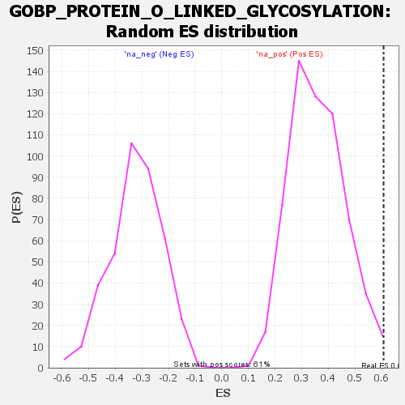

Profile of the Running ES Score & Positions of GeneSet Members on the Rank Ordered List
| Dataset | rank |
| Phenotype | NoPhenotypeAvailable |
| Upregulated in class | na_pos |
| GeneSet | GOBP_PROTEIN_O_LINKED_GLYCOSYLATION |
| Enrichment Score (ES) | 0.6077293 |
| Normalized Enrichment Score (NES) | 1.6909404 |
| Nominal p-value | 0.0082236845 |
| FDR q-value | 0.4540906 |
| FWER p-Value | 0.999 |
| SYMBOL | RANK IN GENE LIST | RANK METRIC SCORE | RUNNING ES | CORE ENRICHMENT | |
|---|---|---|---|---|---|
| 1 | HS6ST1 | 4 | 177.151 | 0.2881 | Yes |
| 2 | CHPF | 32 | 79.003 | 0.4051 | Yes |
| 3 | PXYLP1 | 105 | 47.474 | 0.4503 | Yes |
| 4 | TM9SF2 | 162 | 38.975 | 0.4888 | Yes |
| 5 | B4GAT1 | 193 | 35.469 | 0.5333 | Yes |
| 6 | POGLUT2 | 244 | 30.877 | 0.5612 | Yes |
| 7 | CHST12 | 260 | 29.790 | 0.6032 | Yes |
| 8 | CHST15 | 409 | 21.294 | 0.5712 | Yes |
| 9 | SLC35D1 | 455 | 19.378 | 0.5825 | Yes |
| 10 | POGLUT1 | 597 | 15.256 | 0.5438 | Yes |
| 11 | XYLT2 | 611 | 14.947 | 0.5624 | Yes |
| 12 | TMTC4 | 615 | 14.881 | 0.5854 | Yes |
| 13 | POGLUT3 | 620 | 14.756 | 0.6077 | Yes |
| 14 | B3GNT4 | 1197 | 5.495 | 0.3566 | No |
| 15 | LARGE1 | 1238 | 5.195 | 0.3470 | No |
| 16 | FUT9 | 1522 | -5.984 | 0.2290 | No |
| 17 | GALNT3 | 1683 | -10.573 | 0.1740 | No |
| 18 | TET1 | 1751 | -13.025 | 0.1650 | No |
| 19 | FUT4 | 1778 | -13.951 | 0.1761 | No |
| 20 | EXTL2 | 1845 | -17.683 | 0.1752 | No |
